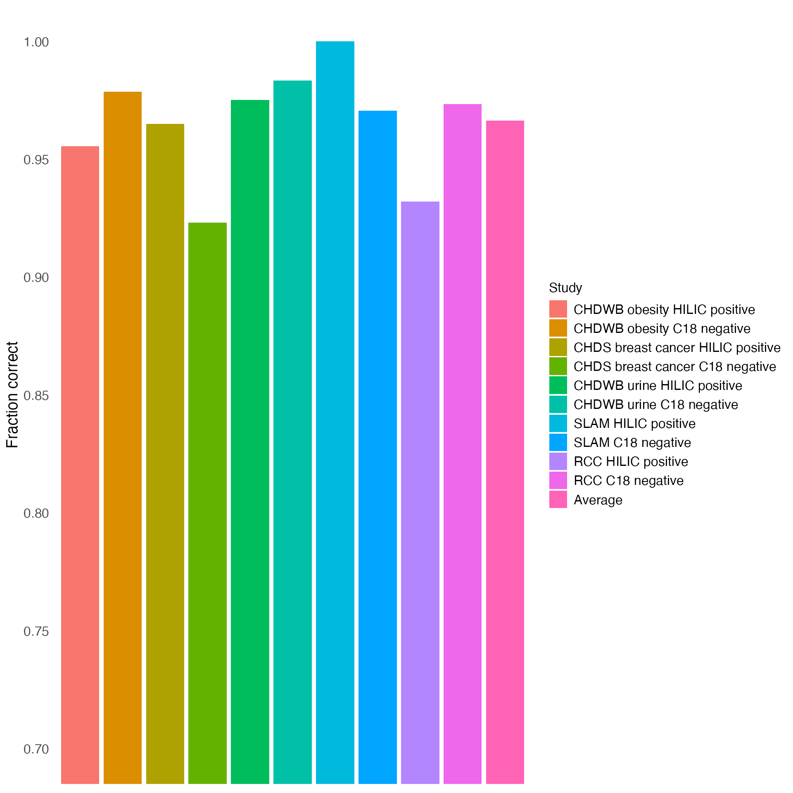
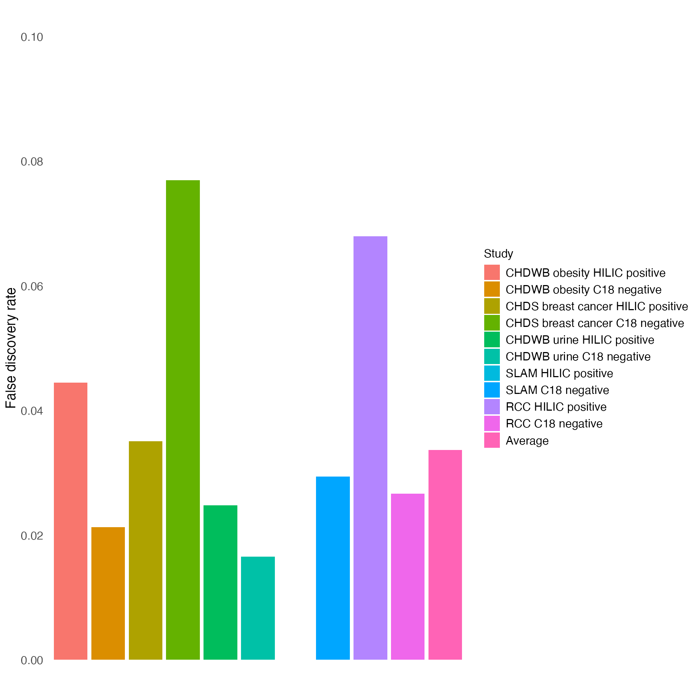

Validation
Jiada Zhan
2024-07-04
validation.rmdOutline:
- Load packages and data
- Summary figure of the fraction correct and false discovery rate of
MSMICA
- The matching between the sample m/z and retention time and reference library m/z and retention time are 5 ppm and 30 seconds, respectively
Load packages and data
##
## Attaching package: 'dplyr'## The following objects are masked from 'package:stats':
##
## filter, lag## The following objects are masked from 'package:base':
##
## intersect, setdiff, setequal, union
library(readr)
library(ggplot2)
# import all validation results for all studies
setwd("/Users/james/Library/Mobile Documents/com~apple~CloudDocs/Desktop/Emory University - Ph.D./PhD dissertation/MSMICA/Publication/Abstract/MSMICA algorithm/MSMICA/validation/Source data Figure 2. Utility of MSMICA for mega-scale metabolite identification")
CHDWB_hilicpos_validation = read_csv("CHDWB_obesity_MSMICA_validation/validation_target_hilicpos_MSMICA_identified_metabolites.csv", show_col_types = FALSE)
CHDWB_c18neg_validation = read_csv("CHDWB_obesity_MSMICA_validation/validation_target_c18neg_MSMICA_identified_metabolites.csv", show_col_types = FALSE)
SLAM_hilicpos_validation = read_csv("SLAM_MSMICA_validation/validation_target_hilicpos_MSMICA_identified_metabolites.csv", show_col_types = FALSE)
SLAM_c18neg_validation = read_csv("SLAM_MSMICA_validation/validation_target_c18neg_MSMICA_identified_metabolites.csv", show_col_types = FALSE)
CHDS_hilicpos_validation = read_csv("CHDS_MSMICA_validation/validation_target_hilicpos_MSMICA_identified_metabolites.csv", show_col_types = FALSE)
CHDS_c18neg_validation = read_csv("CHDS_MSMICA_validation/validation_target_c18neg_MSMICA_identified_metabolites.csv", show_col_types = FALSE)
CHDWB_urine_hilicpos_validation = read_csv("CHDWB_urine_MSMICA_validation/validation_target_hilicpos_MSMICA_identified_metabolites.csv", show_col_types = FALSE)
CHDWB_urine_c18neg_validation = read_csv("CHDWB_urine_MSMICA_validation/validation_target_c18neg_MSMICA_identified_metabolites.csv", show_col_types = FALSE)
RCC_hilicpos_validation = read_csv("RCC_MSMICA_validation/validation_target_hilicpos_MSMICA_identified_metabolites.csv", show_col_types = FALSE)
RCC_c18neg_validation = read_csv("RCC_MSMICA_validation/validation_target_c18neg_MSMICA_identified_metabolites.csv", show_col_types = FALSE)Summary figure of the fraction correct and false discovery rate of MSMICA identification in five independent studies using retention time reference library as the gold standard.
# extract the Fraction_correct and False_discovery_rate values from the first row of each validation result
CHDWB_hilicpos_validation_2 = tibble(
Study = "CHDWB obesity HILIC positive",
## count the row number where the match column is "match" to get the true positive
True_positive = nrow(CHDWB_hilicpos_validation[CHDWB_hilicpos_validation$match == "match", ]),
## count the row number where the match column is not "match" to get the false positive
False_positive = nrow(CHDWB_hilicpos_validation[CHDWB_hilicpos_validation$match != "match", ]),
Total = nrow(CHDWB_hilicpos_validation),
Fraction_correct = CHDWB_hilicpos_validation$Fraction_correct[1],
False_discovery_rate = CHDWB_hilicpos_validation$False_discovery_rate[1]
)
CHDWB_c18neg_validation_2 = tibble(
Study = "CHDWB obesity C18 negative",
True_positive = nrow(CHDWB_c18neg_validation[CHDWB_c18neg_validation$match == "match", ]),
False_positive = nrow(CHDWB_c18neg_validation[CHDWB_c18neg_validation$match != "match", ]),
Total = nrow(CHDWB_c18neg_validation),
Fraction_correct = CHDWB_c18neg_validation$Fraction_correct[1],
False_discovery_rate = CHDWB_c18neg_validation$False_discovery_rate[1]
)
SLAM_hilicpos_validation_2 = tibble(
Study = "SLAM HILIC positive",
True_positive = nrow(SLAM_hilicpos_validation[SLAM_hilicpos_validation$match == "match", ]),
False_positive = nrow(SLAM_hilicpos_validation[SLAM_hilicpos_validation$match != "match", ]),
Total = nrow(SLAM_hilicpos_validation),
Fraction_correct = SLAM_hilicpos_validation$Fraction_correct[1],
False_discovery_rate = SLAM_hilicpos_validation$False_discovery_rate[1]
)
SLAM_c18neg_validation_2 = tibble(
Study = "SLAM C18 negative",
True_positive = nrow(SLAM_c18neg_validation[SLAM_c18neg_validation$match == "match", ]),
False_positive = nrow(SLAM_c18neg_validation[SLAM_c18neg_validation$match != "match", ]),
Total = nrow(SLAM_c18neg_validation),
Fraction_correct = SLAM_c18neg_validation$Fraction_correct[1],
False_discovery_rate = SLAM_c18neg_validation$False_discovery_rate[1]
)
CHDS_hilicpos_validation_2 = tibble(
Study = "CHDS breast cancer HILIC positive",
True_positive = nrow(CHDS_hilicpos_validation[CHDS_hilicpos_validation$match == "match", ]),
False_positive = nrow(CHDS_hilicpos_validation[CHDS_hilicpos_validation$match != "match", ]),
Total = nrow(CHDS_hilicpos_validation),
Fraction_correct = CHDS_hilicpos_validation$Fraction_correct[1],
False_discovery_rate = CHDS_hilicpos_validation$False_discovery_rate[1]
)
CHDS_c18neg_validation_2 = tibble(
Study = "CHDS breast cancer C18 negative",
True_positive = nrow(CHDS_c18neg_validation[CHDS_c18neg_validation$match == "match", ]),
False_positive = nrow(CHDS_c18neg_validation[CHDS_c18neg_validation$match != "match", ]),
Total = nrow(CHDS_c18neg_validation),
Fraction_correct = CHDS_c18neg_validation$Fraction_correct[1],
False_discovery_rate = CHDS_c18neg_validation$False_discovery_rate[1]
)
CHDWB_urine_hilicpos_validation_2 = tibble(
Study = "CHDWB urine HILIC positive",
True_positive = nrow(CHDWB_urine_hilicpos_validation[CHDWB_urine_hilicpos_validation$match == "match", ]),
False_positive = nrow(CHDWB_urine_hilicpos_validation[CHDWB_urine_hilicpos_validation$match != "match", ]),
Total = nrow(CHDWB_urine_hilicpos_validation),
Fraction_correct = CHDWB_urine_hilicpos_validation$Fraction_correct[1],
False_discovery_rate = CHDWB_urine_hilicpos_validation$False_discovery_rate[1]
)
CHDWB_urine_c18neg_validation_2 = tibble(
Study = "CHDWB urine C18 negative",
True_positive = nrow(CHDWB_urine_c18neg_validation[CHDWB_urine_c18neg_validation$match == "match", ]),
False_positive = nrow(CHDWB_urine_c18neg_validation[CHDWB_urine_c18neg_validation$match != "match", ]),
Total = nrow(CHDWB_urine_c18neg_validation),
Fraction_correct = CHDWB_urine_c18neg_validation$Fraction_correct[1],
False_discovery_rate = CHDWB_urine_c18neg_validation$False_discovery_rate[1]
)
RCC_hilicpos_validation_2 = tibble(
Study = "RCC HILIC positive",
True_positive = nrow(RCC_hilicpos_validation[RCC_hilicpos_validation$match == "match", ]),
False_positive = nrow(RCC_hilicpos_validation[RCC_hilicpos_validation$match != "match", ]),
Total = nrow(RCC_hilicpos_validation),
Fraction_correct = RCC_hilicpos_validation$Fraction_correct[1],
False_discovery_rate = RCC_hilicpos_validation$False_discovery_rate[1]
)
RCC_c18neg_validation_2 = tibble(
Study = "RCC C18 negative",
True_positive = nrow(RCC_c18neg_validation[RCC_c18neg_validation$match == "match", ]),
False_positive = nrow(RCC_c18neg_validation[RCC_c18neg_validation$match != "match", ]),
Total = nrow(RCC_c18neg_validation),
Fraction_correct = RCC_c18neg_validation$Fraction_correct[1],
False_discovery_rate = RCC_c18neg_validation$False_discovery_rate[1]
)
# combine all validation results
MSMICA_validation_result = bind_rows(CHDWB_hilicpos_validation_2, CHDWB_c18neg_validation_2, SLAM_hilicpos_validation_2, SLAM_c18neg_validation_2, CHDS_hilicpos_validation_2, CHDS_c18neg_validation_2, CHDWB_urine_hilicpos_validation_2, CHDWB_urine_c18neg_validation_2, RCC_hilicpos_validation_2, RCC_c18neg_validation_2)
# calculate the average fraction correct and false discovery rate
MSMICA_validation_result_summary = MSMICA_validation_result %>%
summarise(
True_positive = sum(True_positive),
False_positive = sum(False_positive),
Total = sum(Total),
Fraction_correct = True_positive/Total,
False_discovery_rate = False_positive/Total
) %>%
mutate(Study = "Average") %>%
select(Study, True_positive, False_positive, Total, Fraction_correct, False_discovery_rate)
# add the average fraction correct and false discovery rate to the validation result
MSMICA_validation_result = bind_rows(MSMICA_validation_result, MSMICA_validation_result_summary)
# factorize the Study column
MSMICA_validation_result$Study = factor(MSMICA_validation_result$Study, levels = c("CHDWB obesity HILIC positive", "CHDWB obesity C18 negative", "CHDS breast cancer HILIC positive", "CHDS breast cancer C18 negative", "CHDWB urine HILIC positive", "CHDWB urine C18 negative", "SLAM HILIC positive", "SLAM C18 negative", "RCC HILIC positive", "RCC C18 negative", "Average"))
print(MSMICA_validation_result, n=Inf, width = Inf)## # A tibble: 11 × 6
## Study True_positive False_positive Total
## <fct> <int> <int> <int>
## 1 CHDWB obesity HILIC positive 86 4 90
## 2 CHDWB obesity C18 negative 92 2 94
## 3 SLAM HILIC positive 64 0 64
## 4 SLAM C18 negative 99 3 102
## 5 CHDS breast cancer HILIC positive 55 2 57
## 6 CHDS breast cancer C18 negative 72 6 78
## 7 CHDWB urine HILIC positive 118 3 121
## 8 CHDWB urine C18 negative 119 2 121
## 9 RCC HILIC positive 96 7 103
## 10 RCC C18 negative 146 4 150
## 11 Average 947 33 980
## Fraction_correct False_discovery_rate
## <dbl> <dbl>
## 1 0.956 0.0444
## 2 0.979 0.0213
## 3 1 0
## 4 0.971 0.0294
## 5 0.965 0.0351
## 6 0.923 0.0769
## 7 0.975 0.0248
## 8 0.983 0.0165
## 9 0.932 0.0680
## 10 0.973 0.0267
## 11 0.966 0.0337
# # save the summary result
# write_csv(MSMICA_validation_result, "MSMICA_validation_result_summary.csv")
# use ggplot to plots the validation results: x-axis = Study, y-axis = Fraction_correct, color = Study using geom_col
ggplot(MSMICA_validation_result, aes(x = Study, y = Fraction_correct, fill = Study)) +
geom_col() +
labs(y = "Fraction correct") +
# minimize the theme
theme_minimal() +
# hide the x axis label and title
theme(
axis.text.x = element_blank(),
axis.ticks.x = element_blank(),
axis.title.x = element_blank(),
axis.title.y = element_text(size = 14), # Increase font size for y-axis title
axis.text.y = element_text(size = 12), # Increase font size for y-axis text
legend.title = element_text(size = 12), # Increase font size for legend title
legend.text = element_text(size = 12),
panel.grid.major = element_blank(),
panel.grid.minor = element_blank()
) +
# make y axis from 0.7 to 1 with 0.05 interval
coord_cartesian(ylim=c(0.7, 1)) +
scale_y_continuous(breaks = seq(0.7, 1, 0.05))
# use ggplot to plots the validation results: x-axis = Study, y-axis = False_discovery_rate, color = Study using geom_col
ggplot(MSMICA_validation_result, aes(x = Study, y = False_discovery_rate, fill = Study)) +
geom_col() +
labs(y = "False discovery rate") +
# minimize the theme
theme_minimal() +
# hide the x axis label and title
theme(
axis.text.x = element_blank(),
axis.ticks.x = element_blank(),
axis.title.x = element_blank(),
axis.title.y = element_text(size = 14), # Increase font size for y-axis title
axis.text.y = element_text(size = 12), # Increase font size for y-axis text
legend.title = element_text(size = 12), # Increase font size for legend title
legend.text = element_text(size = 12),
panel.grid.major = element_blank(),
panel.grid.minor = element_blank()
) +
# make y axis from 0 to 0.1 with 0.02 interval
coord_cartesian(ylim=c(0, 0.1)) +
scale_y_continuous(breaks = seq(0, 0.1, 0.02))